Decidir qué automatizar, y qué no
Inventario de tareas, puntuación y decisión: eliminar, delegar, automatizar o proteger.
Cuando una empresa quiere automatizar, la primera pregunta no es «cómo», sino «qué». Y casi siempre se responde por intuición, o por la tarea que más ruido hizo ese mes. Por eso hay tantos proyectos que automatizan lo que se veía, no lo que pesaba.
Esta herramienta hace el inventario primero. La persona que hace el trabajo apunta lo que hace —a mano, o con un aviso cada X minutos— y cada tarea se puntúa por impacto, frecuencia, facilidad de automatización y riesgo. De ahí sale una prioridad sobre 100 y una acción concreta: eliminar, delegar, automatizar, automatizar en parte o proteger.
Lo más útil no son las candidatas, son los falsos positivos: tareas que puntúan alto pero no deben automatizarse —interrupciones, criterio humano, trato con el cliente—. Marcarlas antes de invertir es lo que separa un plan de automatización de una lista de deseos.
El informe para dirección sale de la propia herramienta: horas inventariadas, horas automatizables, horas al año recuperables y lo que valen al coste hora que se introduzca. Y la fórmula está escrita en pantalla, a la vista del cliente: no hay caja negra ni un modelo decidiendo por detrás, hay aritmética que se puede discutir en una reunión.
Una sola página HTML/CSS/JS sin librerías ni servidor: todo se ejecuta en el dispositivo y los datos no salen de él. Versión de escritorio en Python empaquetada a ejecutable y versión Android. Es un prototipo funcional: los números de las capturas son un juego de quince tareas de ejemplo. Está construido y funciona; el ahorro real con usuarios todavía no está medido, y hasta que lo esté no pondré aquí una cifra.
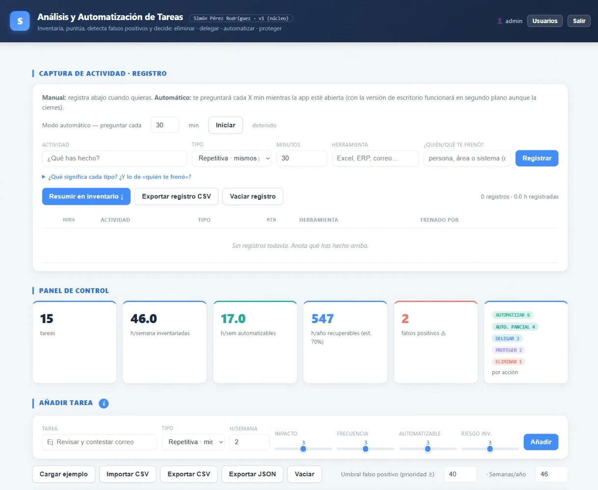
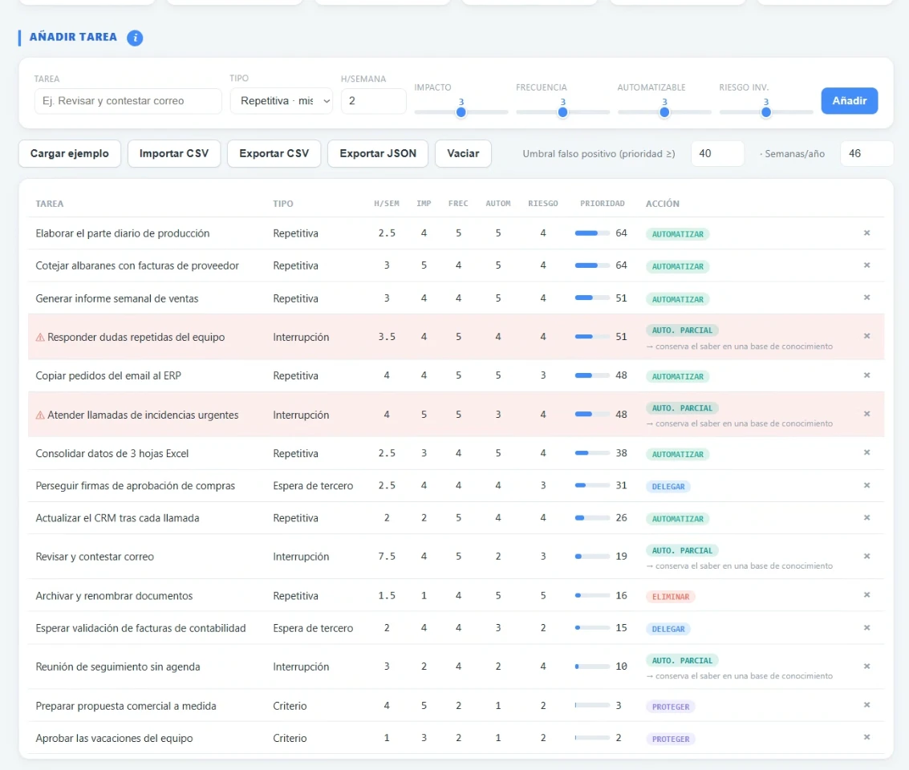
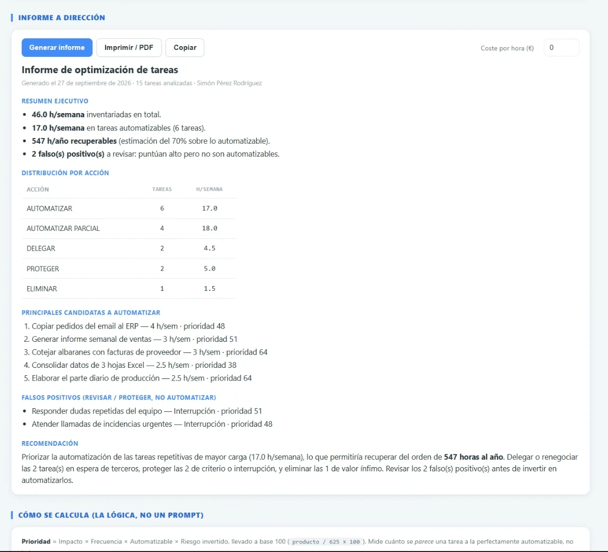
Capturas con el conjunto de ejemplo de la propia herramienta.
Del modelo 3D al ERP, sin reescribir un dato
Los datos de cada pieza pasan del CAD al ERP validados contra reglas, sin volver a teclearse.
Los datos de miles de piezas se escribían tres veces: en el CAD, en una hoja de cálculo, en el ERP. Cada copia era una oportunidad de error, y ahí un error no se queda en el papel: una cantidad mal copiada, una referencia cambiada, un material o un tratamiento que no eran los del plano, o una pieza que nadie llegaba a pedir. Todo eso aparece semanas después, en el taller, con la máquina ya empezada. Los fallos no se reparten: se acumulan al final, justo donde ya no hay margen ni de plazo ni de coste, con el cliente esperando la máquina.
Diseñé un proceso guiado que valida cada dato contra un sistema de reglas antes de grabarlo. Si algo no cuadra, no pasa.
Al menos un 98 % menos de errores de datos, con la medición hecha sobre cuatro fuentes independientes del ERP. Cada dato pasó de manipularse tres veces a decidirse una sola: unas dos jornadas de ingeniería por proyecto que dejan de irse en teclear. Cubre el 100 % de las máquinas que se fabrican.
De tres manipulaciones por dato a una. Lo tachado es trabajo que ya no existe, no trabajo que se hace más rápido.
Qué pasa si no te crees mi número
Lo medido es el volumen: 136 líneas de media por proyecto, unos 12 campos por línea, cada dato transcrito dos veces. Lo estimado es solo el tiempo por dato. Copiar y pegar en seco son unos cinco segundos; lo que tarda de verdad es localizar la pieza, comprobar que es la que toca y retomar la tarea donde la dejaste. Por eso doy cuatro escenarios en vez de uno:
| Escenario | Tiempo por dato | Ahorro por proyecto |
|---|---|---|
| Solo el tecleo, sin buscar ni comprobar | 5 s | 5,5 h |
| Conservador | 10 s | 10,1 h |
| Central (el que publico) | 15 s | 14,6 h |
| Alto | 20 s | 19,1 h |
El ahorro incluye la transcripción doble y la maquetación de la hoja, y descuenta el tiempo de operar la herramienta. Aun contando solo el tecleo en seco —el supuesto más duro contra mi propia cifra— son cinco horas y media por proyecto. Y el modelo deja fuera los cambios: se registran nueve o diez revisiones por proyecto, y antes cada ronda obligaba a editar a mano en dos sitios.
Hay un coste que no cabe en esta tabla. Estas horas no se hacen del tirón: se trocean con llamadas, reuniones y urgencias, y cada vez que vuelves hay que reencontrar por dónde ibas. Una tarea tediosa que se alarga es donde aparecen los fallos, y es también lo que quema a la persona que la hace. Esa parte no la he medido, pero cualquiera que haya estado en una oficina técnica sabe que existe.
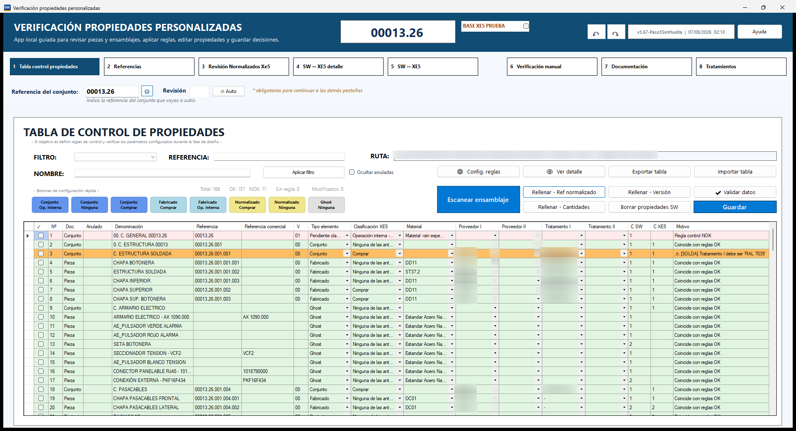
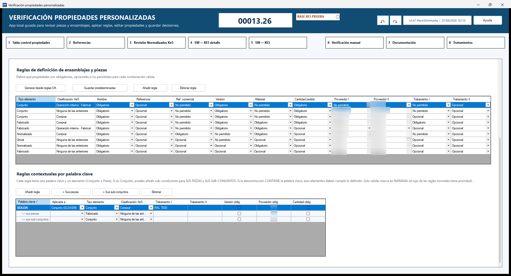
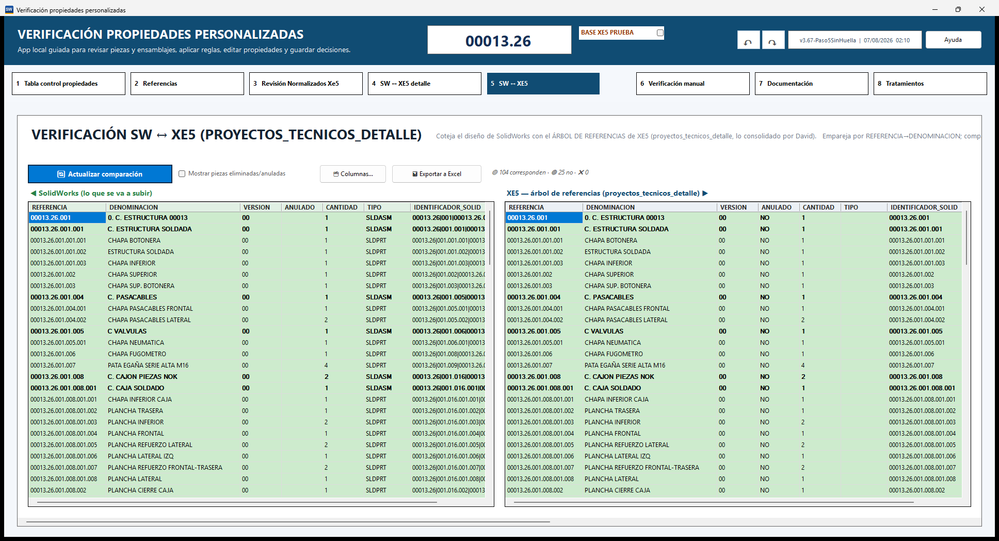
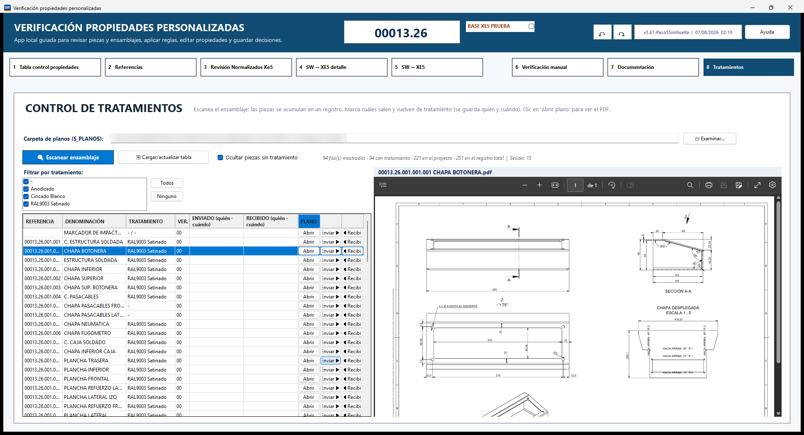
Capturas reales con la ruta interna y los proveedores ocultos.
Aplicación de escritorio · API de CAD paramétrico · ERP · reglas deterministas. Decisión consciente: aquí descarté un modelo de lenguaje. En un pedido de compra, «casi siempre acierta» no sirve.
Sistema de control Planner a medida
El sistema de gestión de toda la empresa: horas, coste real, planificación anual y ausencias del equipo en una sola herramienta.
La empresa se gestionaba con hojas de cálculo sueltas y tres herramientas que no se hablaban entre sí. Nadie sabía a tiempo real cuánto llevaba costando un proyecto.
- Horas y coste real. Cada persona imputa su tiempo a un proyecto y a un centro de coste, con el coste hora de su categoría. Así se sabe lo que lleva costando un proyecto mientras se hace, no tres meses después.
- Planificación anual por semanas. Todos los proyectos con sus fases, desde la recepción del pedido hasta la entrega, con las vacaciones del equipo integradas y versiones guardadas para comparar lo planificado con lo real.
- Intervenciones y ausencias. Calendario anual del equipo, con las ausencias tomadas del control horario como fuente única, para que nadie planifique sobre alguien que no está.
- Ofertas y materiales. Las ofertas se sincronizan con el ERP y el estado del material de cada proyecto se consulta desde la propia herramienta.
Encima de todo eso se publican los cuadros de mando de dirección. Es el sistema que conecta lo que se planifica, lo que se trabaja y lo que cuesta.
Aplicación web · base de datos · integración con el ERP · desplegada en servidor con servicio permanente y copias de seguridad automáticas.
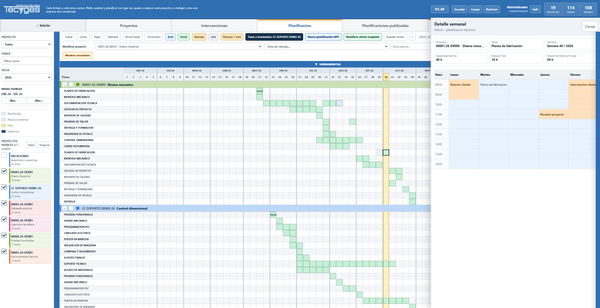
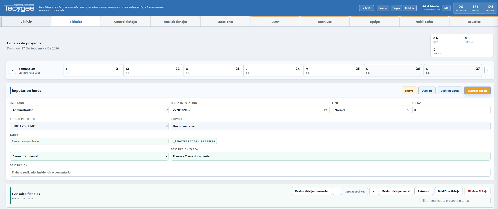
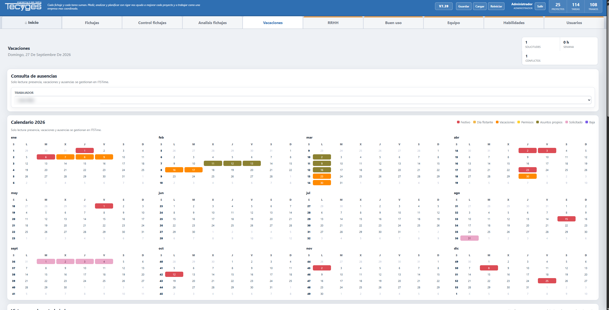
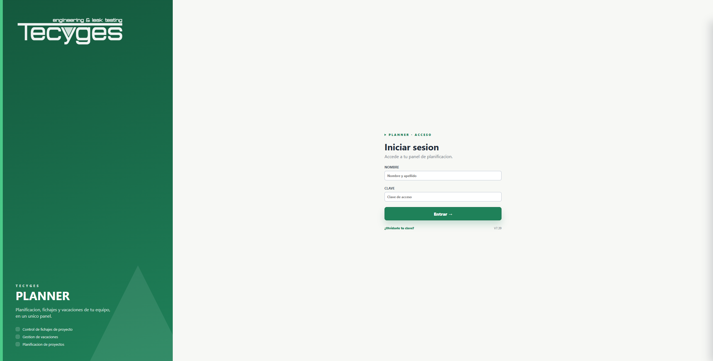
Capturas de la herramienta en uso, con los datos de personas, clientes y proyectos ocultos.
Control de material y tratamientos para el taller
Qué pieza está pedida, recibida o en tratamiento, con su plano al lado y sin licencia de CAD.
Una máquina se monta con cientos de piezas que llegan de proveedores distintos y algunas pasan por tratamientos externos. El taller no sabía qué tenía hasta que se ponía a montar, y las faltas aparecían tarde, con la máquina ya empezada.
Hice una aplicación web para el taller, con el estado de cada pieza: pedida, recibida, enviada a tratamiento, de vuelta. Filtra por proyecto, por tipo de tratamiento o por lo que falta, y muestra el plano de la pieza al lado sin abrir el CAD ni gastar una licencia. Los datos de autorización y recepción salen del ERP; los planos los localiza sola siguiendo el estándar de carpetas de la empresa.
Así se ve de un vistazo qué falta antes de empezar el montaje, y se pueden montar los subconjuntos que sí están completos en lugar de esperar a tenerlo todo.
Aplicación web servida por HTTPS en la red interna · consultas al ERP en solo lectura · usuarios compartidos con el sistema de gestión.
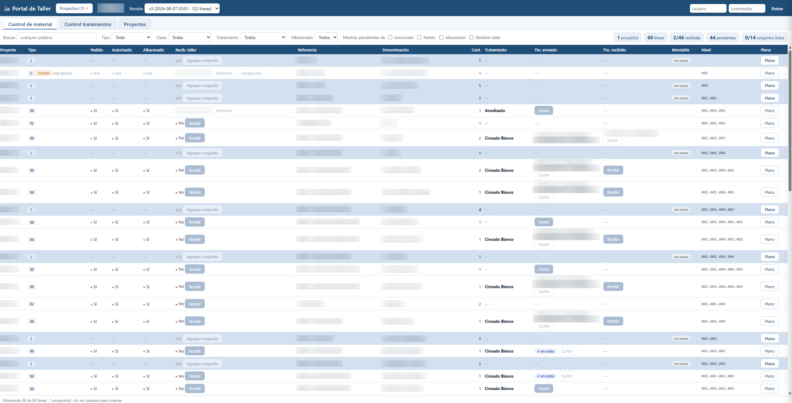
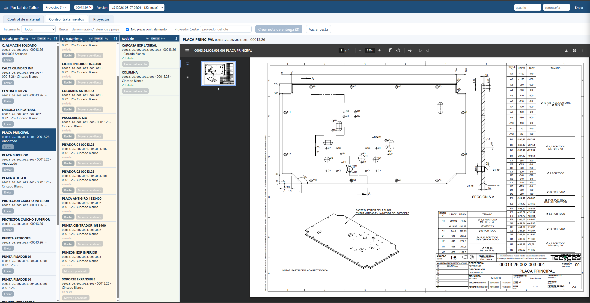
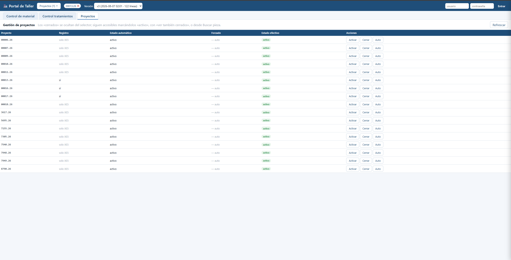
Capturas reales con las referencias, denominaciones y nombres de personas ocultos.
Lectura automática de facturas y albaranes de compra
Los documentos de compra se leen solos y se contrastan contra el ERP antes de aprobar nada. En proceso de medición y mejora.
Documentos escaneados, varios dentro de un mismo PDF, con adjuntos intercalados y facturas extranjeras mezcladas. El reto no era leer, era decidir qué número es el total y poder demostrarlo.
Dos formas independientes de obtener los importes: una anclada en la aritmética del documento y otra en su posición en la página. Solo se aprueba automáticamente lo que ambas confirman; el resto va a revisión de una persona.
Medido a ciegas sobre 213 documentos reales de meses cerrados, contrastados campo a campo contra el ERP: acierta siempre el número de documento, el 91 % de los importes y no ha aprobado ni un documento con un dato incorrecto. La automatización sin intervención pasó del 2 % al 34,7 % en una iteración; el trabajo continúa.
OCR local · modelos de visión y lenguaje en local · contraste contra el ERP. Todo el procesamiento en la máquina: coste por uso cero.
Búsqueda semántica sobre 782 ofertas técnicas
Veinte años de ofertas consultables por parecido, no por nombre de archivo.
Veinte años de ofertas de máquinas a medida eran conocimiento imposible de consultar: cada nueva oferta se hacía de memoria o buscando a mano en carpetas.
Indexé el histórico para poder preguntar «¿qué hicimos en un caso parecido a este?». Arquitectura híbrida: base vectorial para el parecido y base relacional para precios, clientes y fechas, de forma que cambiar un dato de negocio no obliga a reindexar nada.
RAG · embeddings multilingües · base vectorial + base relacional.
Diecinueve cuadros de mando sobre el ERP
Costes, cartera, tesorería y capacidad regenerados cada noche, sin que nadie los prepare.
Dirección tomaba decisiones con hojas de cálculo sueltas y datos de semanas atrás.
Construí una suite de paneles que se genera sola cada noche a partir del ERP y se publica dentro del sistema de gestión: costes por proyecto, cartera, tesorería, coste-beneficio por sección, capacidad del equipo y conciliación pieza a pieza. Incluye alertas de calidad del dato, porque un cuadro de mando que enseña una cifra mal hace más daño que no tenerlo.
Python · SQL sobre el ERP en solo lectura · publicación automática en servidor.
Cómo llegué hasta aquí
De las compras y la logística a dirigir proyectos de máquina completos, pasando por el diseño, las ofertas y el taller.
Empecé en 2013 en la gestión de compras, logística e informática, con la implantación de un ERP desarrollado a medida. En cuanto tuve la oportunidad pasé al diseño mecánico en 3D de máquinas especiales.
Cuando la gestión de proyectos y el diseño estuvieron bajo control, el siguiente paso fue el proceso de ofertas: mejorarlo primero, encargarme después de las ofertas técnicas. Planificar los proyectos, diseñarlos de principio a fin, dirigirlos técnicamente: ahí es donde se entiende cómo se enlazan los departamentos de una ingeniería, desde el planteamiento hasta la validación final del cliente.
Por el camino he formado a diseñadores y comerciales. He estado en el taller en montajes, ajustes y puestas en marcha. No hay atajo para entender un negocio industrial: hay que vivirlo.
De forma transversal, lo que siempre me ha interesado es la mejora de los procesos en los que participaba. Estando dentro del ciclo se puede analizar el proceso, medirlo, rediseñarlo. Desde fuera solo se puede opinar sobre él.
Cómo trabajo
Las reglas que no me salto cuando llevo un sistema a producción.
- Medir antes de escalar. Cada sistema se mide contra los datos reales de la empresa y sobre casos que no se usaron para construirlo. Lo que más vigilo son los errores silenciosos: los que el sistema da por buenos y están mal.
- Reglas donde no se puede fallar, modelos donde aportan. Lo que acaba en un pedido o en la contabilidad se valida de forma determinista. El modelo propone; la verificación decide.
- Quitar lo que no aporta. En un sistema de clasificación de correo medí que de 2.057 clasificaciones que se pagaban, 2.032 no las revisaba nadie. Lo retiré y lo rehíce para funcionar en local, sin coste por uso.
- Integrar, no sustituir. Todo se apoya en el ERP y el CAD que la empresa ya tenía. Nadie ha tenido que cambiar de herramienta para usarlo.
- Construir con IA, con método. Desarrollo asistido por IA con varias sesiones en paralelo, una por proyecto, coordinadas por una base de conocimiento común y con reglas de seguridad y aprobación.
Python · FastAPI · PostgreSQL · MySQL · SQL · C# .NET · API de SolidWorks · integración con ERP · IA generativa y LLM · RAG · agentes · OCR · modelos locales (Ollama) · Git · Windows Server.
Los proyectos descritos se desarrollaron para una ingeniería de máquinas especiales. Por respeto a su información y a la de sus clientes, esta página no incluye nombres ni datos económicos: solo el planteamiento, las decisiones y los resultados medidos. Puedo explicar cualquiera de ellos con más detalle en una conversación.
¿Quieres verlo en un folio?
El currículum completo, con la trayectoria y las herramientas.
Descargar currículum (PDF)Las dos páginas del currículum. Pulsa en cualquiera para abrirlo.
Hablemos
Busco un puesto consultivo de IA aplicada a la industria, en remoto. Disponible con un mes de preaviso.